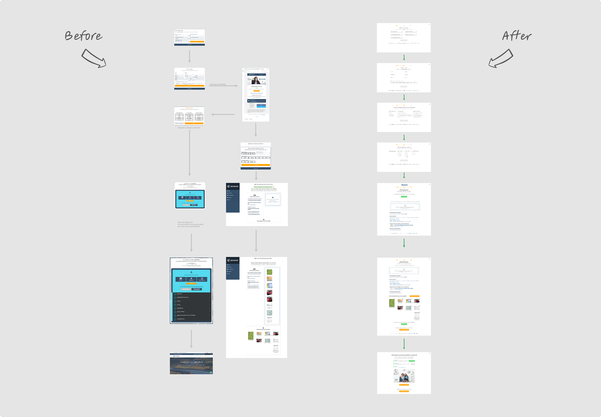
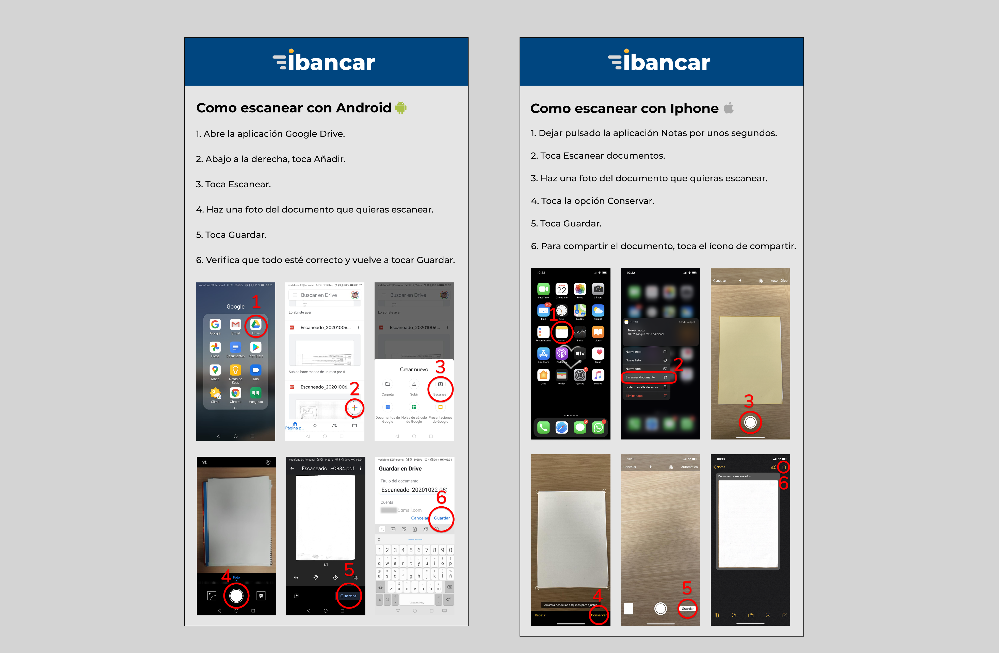
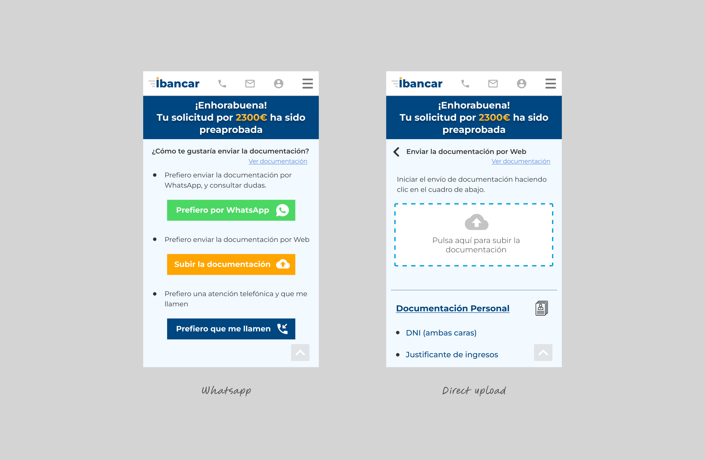
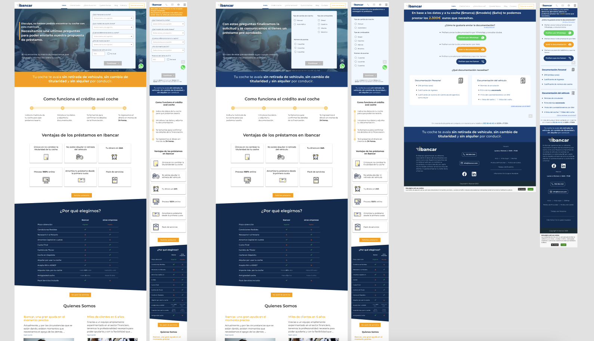

About Ibancar
Ibancar is a car-secured loan platform serving clients across Spain. The company connects investors with borrowers, lending capital with interest, while minimizing risk through rigorous verification of both applicants and vehicles offered as collateral.
The Problem
The existing loan application process was losing potential customers. Despite good traffic volume, conversion rates from leads to approved loans remained below expectations. The company needed to understand why qualified applicants were dropping out of the process.
Key Issues Identified:
- High drop-off rates at specific funnel stages
- Users couldn't complete applications in one session
- Complex documentation requirements were overwhelming applicants
- Mobile users (75-80% of traffic) were struggling with a desktop-first design
Research & Discovery
To understand where and why users were dropping off, I conducted comprehensive research combining qualitative and quantitative methods. I utilized contextual inquiry, user observation, and data-driven personas alongside usage metrics and heatmaps to precisely pinpoint user abandonment points in the loan funnel.

Heatmap analysis revealing user behavior patterns and drop-off points in the application funnel.
Key Insights from Research
The research showed that the design was failing the majority of our users. We had very high mobile traffic (75-80%), yet the design was not fully mobile-friendly. The journey was confusing, forcing users to check their email and leave the application process. Also, requiring 11 documents was too overwhelming. With these key insights from the empathize phase, I could move to the next phase to set clear priorities and solutions.
Using the collected research, I analyzed the data through rigorous funnel analysis, detailed information synthesis, and clusterization techniques to pinpoint the exact user pain points and uncover areas for valuable opportunities.
The Design Process
The application form was confusing because users had to use four different screens and leave the website to check their email. I made the form much simpler, reducing the steps from four screens to two, and I took out the email check. Now, users can finish the application faster and without leaving the page.

Comparison of bifurcated user flow versus streamlined flow, eliminating the email verification step.
I utilized card sorting to consolidate requirements, reducing user effort by 55%. I further streamlined the experience by implementing conditional logic to only show relevant fields and created visual guides for iOS and Android to prevent errors. These optimizations significantly simplified the journey and directly increased completion rates.

Visual instructions for iPhone and Android users.
Competitor analysis revealed that mobile-first leaders leverage familiar communication channels to reduce friction. In response, I integrated WhatsApp to streamline document uploads and real-time support. This included a one-tap CTA for instant connection and a seamless CRM handoff to agents, while still offering users the flexibility of direct uploads or scheduled callbacks.

WhatsApp integration for document uploads and real-time support.
I created interactive prototypes and conducted unmoderated testing to validate the design and identify any usability issues.
Mobile prototype with step-by-step guidance for document uploads and error prevention.
Final Design
The final solution delivered a simplified, mobile-first flow featuring integrated WhatsApp support and consolidated documentation requirements. By prioritizing error prevention and real-time assistance, the new design significantly enhanced the overall user experience.

Final streamlined loan application flow with consolidated documentation and WhatsApp integration.
Results & Impact
The redesigned funnel exceeded growth objectives and significantly improved the user experience:
Successfully scaled loan origination by 3.5% over the past 12 months while maintaining credit losses at an exceptionally low 2.2% of revenue—achieving profitability 6 months ahead of plan.
Credit losses remained at an exceptionally low rate of revenue
In form complexity (from 4 to 2 screens)
Documentation friction (from 11 to 5 items)
Reflection
Navigating the inherent complexity of financial loans taught me that simplicity is a business strategy. With 75-80% of traffic on mobile, adopting a mobile-first mindset was not optional; it was critical for business survival. I learned to balance reducing friction with strict compliance, prioritizing proactive error prevention over simple error recovery. Finally, implementing fallbacks and WhatsApp support reinforced that we must build resilience and meet users where they already are.
Want to discuss this project?
I'd love to share more details about the research process, design decisions, and outcomes.